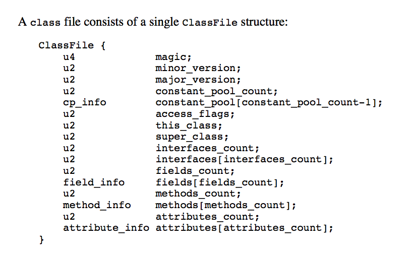

[toc]
The Structure of JVM
the class file format
- Compiled code is in binary format
- stored in a file known as the class file format
- it precisely defines the representation of a class or interface
- it includes details such as byte ordering
data types
- primitive types – primitive values
- reference types – reference values
- all type checking is done prior to run time, by compiler not JVM
- An object is either a dynamically allocated class instance or an array
- A reference to an object is considered to have JVM type reference
- values of type referecence can be thought of as pointers to objects
primitive types and values
- the primitive data types supported by JVM are : numeric types , boolean types, returnAddress type
- numeric types consist of integral types and floating-pointing types
numeric types
| type | size | range |
|---|---|---|
| byte | 8-bit | -128 to 127 |
| short | 16 bit | -32768 to 32767 |
| int | 32bit | -2147483648 to 2147483647 |
| long | 64bit | |
| char | 16bit | 0 to 65535 inclusive |
default char: the null code point (‘\u0000’)
floating-pointing types:
| type | size |
|---|---|
| float | 32 bit |
| double | 64 bit |
boolean types true or false
Although the Java Virtual Machine defines a boolean type, it only provides very limited support for it. There are no Java Virtual Machine instructions solely dedicated to operations on boolean values. Instead, expressions in the Java programming language that operate on boolean values are compiled to use values of the Java Virtual Machine int data type.
The Java Virtual Machine does directly support boolean arrays. Its newarray instruction (§newarray) enables creation of boolean arrays. Arrays of type boolean are accessed and modified using the byte array instructions baload and bastore (§baload, §bastore).
returnAddress type
The values of the returnAddress type are pointers to the opcodes of Java Virtual Machine instructions. Of the primitive types, only the returnAddress type is not directly associated with a Java programming language type.
The returnAddress type is used by the Java Virtual Machine’s jsr, ret, and jsr_w instructions (§jsr, §ret, §jsr_w).
The values of the returnAddress type are pointers to the opcodes(operation codes) of Java Virtual Machine instructions.
Reference types and values
There are three kinds of reference types:
class types,
array types,
and interface types.
Their values are references to dynamically created class instances, arrays, or class instances or arrays that implement interfaces, respectively.
The default value of a reference type is null.
Run-time data areas
The Java Virtual Machine defines various run-time data areas that are used during execution of a program. Some of these data areas are created on Java Virtual Machine start-up and are destroyed only when the Java Virtual Machine exits. Other data areas are per thread. Per-thread data areas are created when a thread is created and destroyed when the thread exits.
the pc register
- The Java Virtual Machine can support many threads of execution at once
- each jvm thread has its own pc(program counter) register
- At any point, each Java Virtual Machine thread is executing the code of a single method, namely the current method (§2.6) for that thread
- if not native method, pc contains the address of JVM instruction being executed
- if native method, pc is undefined(null)
the JVM stack
- each JVM thread has a private JVM stack
- created as the same time as the thread
- it holds local variables and partial results, and plays a part in method invocation and return
• If the computation in a thread requires a larger Java Virtual Machine stack than is permitted, the Java Virtual Machine throws a StackOverflowError.
• If Java Virtual Machine stacks can be dynamically expanded, and expansion is attempted but insufficient memory can be made available to effect the expansion, or if insufficient memory can be made available to create the initial Java Virtual Machine stack for a new thread, the Java Virtual Machine throws an OutOfMemoryError.
HEAP
- heap is shared among all jvm threads
- The heap is the run-time data area from which memory for all class instances and arrays is allocated.
- created on virtual machine start-up.
- heap storage for objects is reclaimed by GC
- objects are never explicitly deallocated
- The memory for the heap does not need to be contiguous.
• If a computation requires more heap than can be made available by the automatic storage management system, the Java Virtual Machine throws an OutOfMemoryError.
method area
shared among all threads
stores per-class structures such as
the run-time constant pool
field and method data
the code for methods and constructorscreated on jvm start-up
- Although the method area is logically part of the heap, simple implementations may choose not to either garbage collect or compact it.
• If memory in the method area cannot be made available to satisfy an allocation
request, the Java Virtual Machine throws an OutOfMemoryError.
Run-Time Constant Pool
- A run-time constant pool is a per-class or per-interface run-time representation of the constant_pool table in a class file
- the run-time constant pool for a class or interface is constructed when the class or interface is created (§5.3) by the Java Virtual Machine.
- part of method area
Native Method Stacks
Frame
A frame is used to store data and partial results, as well as to perform dynamic linking, return values for methods, and dispatch exceptions.
A new frame is created each time a method is invoked.
A frame is destroyed when its method invocation completes, whether that completion is normal or abrupt (it throws an uncaught exception)
frames are allocated from the Java Virtual Machine stack (§2.5.2) of the thread creating the frame.
Each frame has its own array of local variables (§2.6.1), its own operand stack (§2.6.2), and a reference to the run- time constant pool (§2.5.5) of the class of the current method.
local variable
Each frame (§2.6) contains an array of variables known as its local variables.
Local variables are addressed by indexing.
The Java Virtual Machine uses local variables to pass parameters on method invocation.
operand stacks
The operand stack is empty when the frame that contains it is created. The Java Virtual Machine supplies instructions to load constants or values from local variables or fields onto the operand stack. Other Java Virtual Machine instructions take operands from the operand stack, operate on them, and push the result back onto the operand stack. The operand stack is also used to prepare parameters to be passed to methods and to receive method results.
dynamic linking
Each frame (§2.6) contains a reference to the run-time constant pool (§2.5.5) for the type of the current method to support dynamic linking of the method code.
Exceptions
An exception in the Java Virtual Machine is represented by an instance of the class Throwable or one of its subclasses.
Throwing an exception results in an immediate nonlocal transfer of control from the point where the exception was thrown.
exception handler
An exception handler specifies the range of offsets into the Java Virtual Machine code implementing the method for which the exception handler is active, describes the type of exception that the exception handler is able to handle, and specifies the location of the code that is to handle that exception
When an exception is thrown, the Java Virtual Machine searches for a matching exception handler in the current method. If a matching exception handler is found, the system branches to the exception handling code specified by the matched handler.
instruction set summary
A Java Virtual Machine instruction consists of a one-byte opcode specifying the operation to be performed, followed by zero or more operands supplying arguments or data that are used by the operation.
i for an int operation, l for long, s for short, b for byte, c for char, f for float, d for double, and a for reference.
Given the Java Virtual Machine’s one-byte opcode size, encoding types into opcodes places pressure on the design of its instruction set.
The only integer operations that can throw an exception are the integer divide instructions (idiv and ldiv) and the integer remainder instructions (irem and lrem), which throw an ArithmeticException if the divisor is zero.
Object Creation and Manipulation
- both class instances and arrays are objects,
- creates and manipulates class instances and arrays using distinct sets of instructions:
- Create a new class instance: new.
- Access fields of classes (static fields, known as class variables) and fields of class instances (non-static fields, known as instance variables): getstatic, putstatic, getfield, putfield.
- Check properties of class instances or arrays: instanceof, checkcast.
Synchironization
synchronization construct: the monitor.
When invoking a method for which ACC_SYNCHRONIZED is set, the executing thread enters a monitor, invokes the method itself, and exits the monitor whether the method invocation completes normally or abruptly.
During the time the executing thread owns the monitor, no other thread may enter it.
Synchronization of sequences of instructions is typically used to encode the synchronized block of the Java programming language.
The Java Virtual Machine supplies the monitorenter and monitorexit instructions to support such language constructs.
Note that the monitor entry and exit automatically performed by the Java Virtual Machine when invoking a synchronized method are considered to occur during the calling method’s invocation.
Compiling
Compiler transfer java code into instruction set of the jvm
Just-in-time code generator(JIT)
Note that the term “compiler” is sometimes used when referring to a translator from the instruction set of a Java Virtual Machine to the instruction set of a specific CPU.
Synchironization
Synchronization in the Java Virtual Machine is implemented by monitor entry and exit
the class file format
